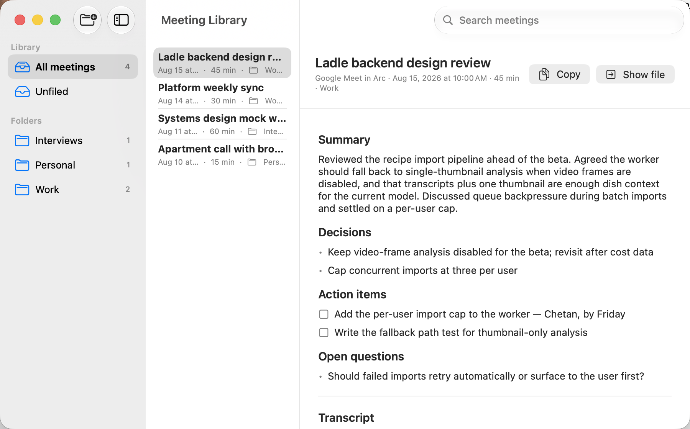

The actual interface, rebuilt in HTML. Click Record.
When Zoom, Teams, Webex, FaceTime, or a browser call starts, Meeting Recorder asks before recording. It captures microphone and system audio separately, then creates a Me/Them transcript and a Markdown note. There is no bot, no account, and no subscription. Transcription and analysis use your own OpenRouter key.
ScreenCaptureKit records your microphone and the call as separate files, in two-minute recovery chunks that survive failures.
The two tracks are transcribed separately and merged by timestamp. No diarization model, no guessing.
Thanks for making time. We're evaluating logging vendors for the backend.
Happy to walk through it. Most teams your size start on the free tier.
Before pricing, can we talk about self-hosting the ingest path?
An OpenRouter model writes the note sections you configure and files the meeting under its calendar event name. The prompt and model are editable, existing notes can be regenerated, and each meeting shows its exact API cost.

Link a vault and a Meetings symlink points at the app's Markdown library. Obsidian reads the same files, and every meeting includes Open in Obsidian.
| Stage | Data | Where it goes |
|---|---|---|
| Recording | Microphone and system-audio chunks | This Mac |
| Transcription | Audio chunks | OpenRouter, with your key |
| Analysis | Transcript text | OpenRouter, with your key |
| Library | Markdown notes and transcripts | This Mac |
Failed transcription keeps the recording on disk, and Retry is offered at the notch. Successful recordings are deleted unless you choose to keep them.
No bot joins the call. You remain responsible for any recording consent your location or participants require.